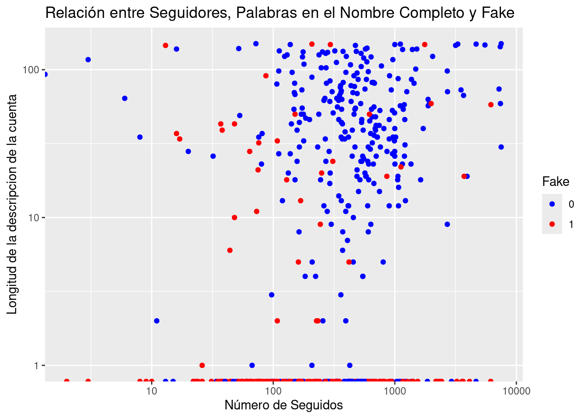
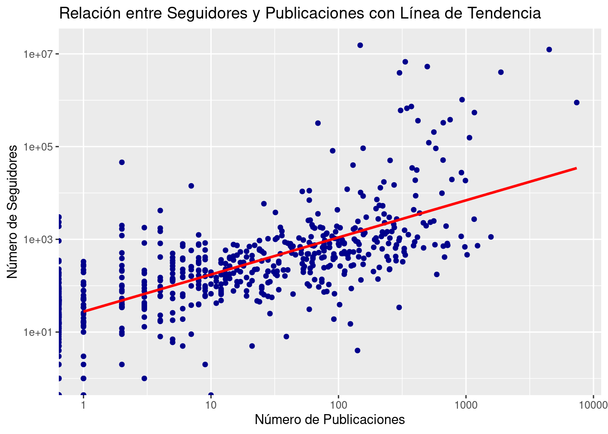

A todos siempre nos ha gustado apreciar todas las “mates” por los ojos, ¿verdad? Y es que ver una gráfica que te muestre de manera clara y concisa como evoluciona cierta variable a lo largo del tiempo, cómo 2 o más variables están correlacionadas cuando no lo parecía o cúales son los máximos que toma una variable a partir de un histograma, es mucho más divertido que ver tablas y tablas llenas de números y atributos. Podemos estar tranquilos porque este apartado del book evitará esto último.
Y es que la visualización de datos nos permite ir más allá de las simples cifras y estadísticas, brindándonos una forma poderosa de comprender y comunicar patrones, tendencias y relaciones en nuestros datos. Desde gráficos simples hasta visualizaciones interactivas y sofisticadas, las herramientas de visualización nos permiten explorar la información de manera intuitiva y revelar insights que pueden pasar desapercibidos en tablas de datos estáticas.
Al representar nuestros datos de manera visual, podemos identificar patrones complejos, detectar anomalías, y acciones similares. Ya sea que estemos explorando datos para comprender el comportamiento de los usuarios en una plataforma digital, analizando tendencias de ventas en un negocio, investigando patrones climáticos a lo largo del tiempo o, en nuestro caso, viendo cualidades y/o atributos de perfiles fake de Instagram, la visualización de datos nos brinda una ventana clara y concisa hacia el mundo de la información que nos rodea.
En esta sección del libro, exploraremos diversas técnicas y herramientas de visualización de datos que nos permitirán sacar el máximo provecho de nuestro dataset. Desde gráficos simples hasta visualizaciones interactivas, aprenderemos cómo seleccionar y construir visualizaciones efectivas que nos ayuden a contar historias convincentes y a extraer insights valiosos de nuestros datos. ¡Vamos a ello!
2.1 Veamos qué es capaz de hacer ggplot
Entre las diversas herramientas disponibles para la visualización de datos, una de las más poderosas y versátiles es ggplot2, una librería en R que ofrece una manera elegante y flexible de crear gráficos de alta calidad. Desarrollada por Hadley Wickham (sí, otra vez él), ggplot2 se basa en la filosofía de ‘The Grammar of Graphics’, que se centra en descomponer los gráficos en componentes fundamentales para construir visualizaciones de datos de manera intuitiva y estructurada.
La fortaleza de ggplot2 radica en su enfoque declarativo, donde los usuarios describen qué quieren representar y cómo, en lugar de preocuparse por los detalles técnicos de implementación. Con ggplot2, podemos crear una amplia variedad de gráficos, desde simples diagramas de dispersión hasta complejas visualizaciones de datos multivariados, con un código conciso y legible.
En este libro, exploraremos los conceptos básicos de ggplot2 y aprenderemos cómo utilizar esta potente herramienta para crear visualizaciones impactantes. Comenzaremos primero por importar las librerías necesarias.
Rows: 576 Columns: 12
── Column specification ────────────────────────────────────────────────────────
Delimiter: ","
dbl (12): profile pic, nums/length username, fullname words, nums/length ful...
ℹ Use `spec()` to retrieve the full column specification for this data.
ℹ Specify the column types or set `show_col_types = FALSE` to quiet this message.
test <-read_csv("datasets/test.csv")
Rows: 120 Columns: 12
── Column specification ────────────────────────────────────────────────────────
Delimiter: ","
dbl (12): profile pic, nums/length username, fullname words, nums/length ful...
ℹ Use `spec()` to retrieve the full column specification for this data.
ℹ Specify the column types or set `show_col_types = FALSE` to quiet this message.
all_data <-rbind(train, test)library(ggplot2)
Una vez hemos importado “ggplot2”, podemos proceder a hacer uso de las múltiples funcionalidades que nos ofrece. Para tantear el terreno, podemos ver algunas pequeñas cosas que es capaz de hacer.
ggplot(data = all_data, aes(x =`nums/length username`)) +geom_histogram(binwidth =0.1, fill ="skyblue", color ="black") +labs(title ="Histograma de proporciones de dígitos en los nombres",x ="Proporción de dígitos por longitud de nombre de usuario",y ="Frecuencia") +theme(plot.title =element_text(hjust =0.5))
Vemos en el anterior gráfico de histogramas un recuento de frecuencia de cuentas para los distintos valores de proporción dígitos-longitud de username. Se puede ver claramente como las cuentas que predominan son aquellas que no presentan ningún dígito en su nombre de usuario.
Cuando se utiliza la función geom_histogram(), el valor predeterminado para el argumento “stat” es “bin”, lo que significa que ggplot2 calculará automáticamente la frecuencia (o el recuento) de observaciones en cada intervalo de clase y representará estas frecuencias en el eje y del histograma. Continuemos explorando qué más podemos hacer.
Podemos ver también la distrubicuón de datos en nuestro dataset que presentan cuentas fake y verdaderas:
# Contar la cantidad de cuentas falsas y no falsasfake_counts <-table(all_data$fake)# Gráfico de pastelpie(fake_counts, labels =c("No Falsa", "Falsa"), col =c("skyblue", "salmon"),main ="Proporción de Cuentas Falsas vs. No Falsas")
¿Qué tal si vemos de manera visual cuantás cuentas de nuestro dataset pertenecen al grupo de privadas y cuántas a públicas? Además le asociaremos mediante scale_fill_manual distintos colores para cada uno de los grupos…
# Diagrama de dispersión: Relación entre #followers y #postsggplot(data = all_data, aes(x = private, fill =as.factor(private))) +geom_bar() +labs(title ="Cuentas Privadas vs Públicas",x ="Cuenta privada (0 = No, 1 = Sí)",y ="Cantidad") +scale_fill_manual(values =c("skyblue", "salmon"), name ="Tipo de Cuenta", # Cambiar el texto en la leyendalabels =c("No", "Sí")) +theme(plot.title =element_text(hjust =0.5))
De manera equivalente, existe una función denominada hist(), que nos podría haber servido para el mismo propósito…
hist(all_data$private)
Como vemos, está siendo muy habitual en los gráficos ver el título de los mismo de manera centrada con respecto a la representación. Esto lo logramos con plot.title, que se trata de un argumento de theme, una función que te permite personalizar diversos aspectos de la apariencia de tu gráfico, como el color de fondo, los márgenes, las etiquetas de los ejes, la posición del título, entre otros.
Podemos pasar ahora a ver un poco de puntos, que suele ser lo mas normal. Ya veremos más adelante en la sección de regresión, que se tratará de un gráfico realmente representativo, e importante para poder modelar rectas o modelos que nos permitan realizar estimaciones en el futuro para nuevos datos entrantes sobre cuentas de Instagram.
ggplot(all_data, aes(x =`#followers`, y =`#posts`)) +geom_point(color ="darkblue") +labs(x ="Número de Seguidores", y ="Número de Publicaciones") +ggtitle("Relación entre Seguidores y Publicaciones")
¡Ups, algo ha ido mal! Existen una serie de puntos que están haciendo que ggplot trate de adaptar el gráfico lo mejor posible a todo el dataset, pero como dichos valores de número de seguidores son demasiado altos con respecto al resto, la gráfica resultante es lo que se ve por pantalla, nada claro. Existen varias manera de poder darle solución a esto.
La primera de ellas podría ser, detectar cuáles son dichos puntos, y cortar de raiz el problema. Eliminarlos del dataset y ver si el nuevo dataset es más apto a ser representado mediante geom_point(). Como vemos en el gráfico inútil, son 6 los puntos que nos están poniendo piedras en el camino.
# Como realmente a la hora de representar un dataset mediante un gráfico# de puntos no nos importa si está ordenado por algún atributo, no va# a influir trabajar en este chunk con un dataset con un orden distintos.datos_ordenados <- all_data[order(all_data$`#followers`, decreasing =TRUE), ]datosSinLosPrimeros6 <- datos_ordenados[-(1:6), ]ggplot(datosSinLosPrimeros6, aes(x =`#followers`, y =`#posts`)) +geom_point(color ="darkblue") +labs(x ="Número de Seguidores", y ="Número de Publicaciones") +ggtitle("Relación entre Seguidores y Publicaciones")
Hemos avanzado algo, pero muy poco siendo objetivos. Seguimos sin ver nada, ya que se aprecia claramente una contundente densidad de puntos en la parte inferior izquierda, problamente por la distribución de los datos con los que estamos trabajando. ¿Qué podemos hacer entonces? No hay por qué alterarnos, todo tiene solución, y más aún en el mundo del análisis de datos. Vamos a optar por cambiar la escala de nuestros datos, para ver si así logramos algo. Concretamente, la escala logarítmica puede ser útil cuando tienes datos con una distribución sesgada o con valores extremadamente grandes que dificultan la visualización de los detalles en la parte inferior de la escala. Por ello usamos scale_x(y)_log10.
ggplot(all_data, aes(x =`#followers`, y =`#posts`)) +geom_point(color ="darkblue") +labs(x ="Número de Seguidores", y ="Número de Publicaciones") +ggtitle("Relación entre Seguidores y Publicaciones") +scale_x_log10(breaks =2^seq(0, 24, by =1),labels = scales::comma) +# Escala logarítmica en base 10 para el eje xscale_y_log10(labels = scales::comma) +# Escala logarítmica en base 10 para el eje ytheme(plot.title =element_text(hjust =0.5),axis.text.x =element_text(angle =90, vjust =0.5, hjust=1))
¡Esto ya es otra cosa! Ahora podemos ver mucho mejor las cosas. La aplicación de una escala logarítmica en este gráfico ha permitido una representación más clara y efectiva de los datos, especialmente cuando se trata de valores que abarcan varios órdenes de magnitud. Sin embargo, es importante tener en cuenta que los valores que aparecen en los ejes no son los reales, sino los convertidos mediante la escala logarítmica. Por lo tanto, se debe ejercer cautela al interpretar los valores representados en el gráfico. Es decir, si quisieramos obtener de vuelta dichos valores reales a partir de los visualizados en la gráfica, deberíamos realizar la operación inversa a la escala realizada.
Podríamos probar también a representar una gráfica donde la inferencia o eje Y correspondiera a la variable que realmente esta modelandose a lo largo de todo el análisis de datos de este dataset, fake. Para ello:
ggplot(all_data, aes(x =`#followers`, y =`fullname words`, color =as.factor(fake))) +geom_point() +labs(x ="Número de Seguidores", y ="Número de Palabras en el Nombre Completo", color ="Fake") +ggtitle("Relación entre Seguidores, Palabras en el Nombre Completo y Fake") +scale_color_manual(values =c("blue", "red")) +scale_x_log10() +scale_y_log10()
Podemos ver claramente en el gráfico como existe una separación notable entre cuentas fake y no fake en funcion del número de seguidores que tienen, aunque no es tan significante el número de palabtas en el nombre completo. Podemos probar a modelarlo en función de otros atributos…
ggplot(all_data, aes(x =`#follows`, y =`profile pic`, color =as.factor(fake))) +geom_point() +labs(x ="Número de Seguidos", y ="¿Tiene foto de perfil?", color ="Fake") +ggtitle("Relación entre Seguidores, Palabras en el Nombre Completo y Fake") +scale_color_manual(values =c("blue", "red")) +scale_x_log10()
Se aprecia como en el caso de las cuentas que no presentan foto de perfil, no importa el número de seguidores que tengan ya que podemos asegurar casi al 100% de firmeza que se va a tratar de una cuenta falsa, lo cual es lógico pensar. En el caso de las cuentas que si presentan fotos en su cuenta, la distribución de cuentas fake es más complicada de ver.
ggplot(data =subset(all_data, `profile pic`==1), aes(x =`#follows`, y =`description length`, color =as.factor(fake))) +geom_point() +labs(x ="Número de Seguidos", y ="Longitud de la descripcion de la cuenta", color ="Fake") +ggtitle("Relación entre Seguidores, Palabras en el Nombre Completo y Fake") +scale_color_manual(values =c("blue", "red")) +scale_x_log10() +scale_y_log10()

Ahora vemos información mucho más útil de la cual poder extraer conocimiento. Se ve claramente en la parte superior derecha del gráfico un extensa densidad de puntos azules (cuentas verdades de Instagram), que corresponden a un intervalo aproximado (ignorando samples anómalos) de entre 100 y 1000 seguidos en su cuenta, y 8 y 110 palabra en la descripcion de dichas cuentas, lo cual es realmente lógico para nosotros. Cuando el número de palabras en la descripción es 0, es mucho más probable que estemos hablando de cuentas no verdaderas:
# Contar el número de cuentas fake y no fake con description length igual a 0table(subset(all_data, `description length`==0)$fake)
0 1
91 304
Vemos que concretamente son 304 cuentas las que son fake cuando la descripción de sus cuentas es vacía, frente a 91 verdaderas.
Existe otra herramienta de interes en el área de visualización de datasets (así como en regresión, por ejemplo) que es pairs(). Se trata de una herramienta versátil y poderosa utilizada en el análisis exploratorio de datos y la visualización. Su función principal es crear una matriz de gráficos de dispersión, lo que permite explorar las relaciones entre múltiples variables en un conjunto de datos de manera eficiente. Genera una cuadrícula de gráficos de dispersión donde cada celda representa la relación entre dos variables del conjunto de datos.
pairs(all_data, col ="salmon")
Ggplot también permite hacer uso de geom_smooth para simular un modelo linear de regresión sobre las variables que le indicamos. Sin embargo, no termina de ser demasiada útil, y más tarde en el apartado de regresión explotaremos de manera más inteligente este tipo de técnicas.
# Gráfico de dispersión de seguidores vs. publicaciones con línea de tendenciaggplot(all_data, aes(x =`#posts`, y =`#followers`)) +geom_point(color ="darkblue") +geom_smooth(method ="lm", se =FALSE, color ="red") +# Agregar línea de tendencialabs(x ="Número de Publicaciones", y ="Número de Seguidores") +ggtitle("Relación entre Seguidores y Publicaciones con Línea de Tendencia") +scale_x_log10() +scale_y_log10()
`geom_smooth()` using formula = 'y ~ x'

Podríamos hacer un único gráfico, que se componga a su vez de otros 2 subgráficos. Esto lo lograremos haciendo uso de facet_grid. Concretamente, haremos la división a partir de si los datos presentan fotos en su perfil.
ggplot(all_data) +geom_point(aes(x =`#followers`, y =`nums/length username`, color =`fake`)) +scale_x_log10() +scale_y_log10() +facet_grid(rows =vars(`profile pic`))
O incluso podríamos ir un paso más alla. Discretizando alguno de los atributos de nuestro dataset y añadiendo más separación de subgráficos. ¡Vamos a ello!
Esta composición de gráficos nos permite sacar varias conclusiones visual y rapidamente. Por un lado nos podemos centrar en la primera columna. Se trata de un subplot filtrado para aquellas filas de nuestro dataset que presentan una longitud de descripcion corta (la gran mayoría del dataset por lo que podemos ver). Dentro de esta columna del subplot, se ve claramente, como ya habíamos concluido antes, que las cuentas que no tienen foto de perfil son siempre falsas, y si tienen, la distribución entonces está un poco más repartida. En el caso de las otras columnas (descripciones medias y altas), en la gran mayoría de los datos se trata de cuentas verdaderas, salvo casos excepcionales.
Ahora que hemos explorado a fondo nuestros datos a través de diversas técnicas de visualización, podemos pasar a la interesante sección de reglas de asociación. En esta fase, nos adentraremos en el mundo de las relaciones y patrones ocultos en nuestros datos, utilizando técnicas avanzadas para descubrir insights valiosos.